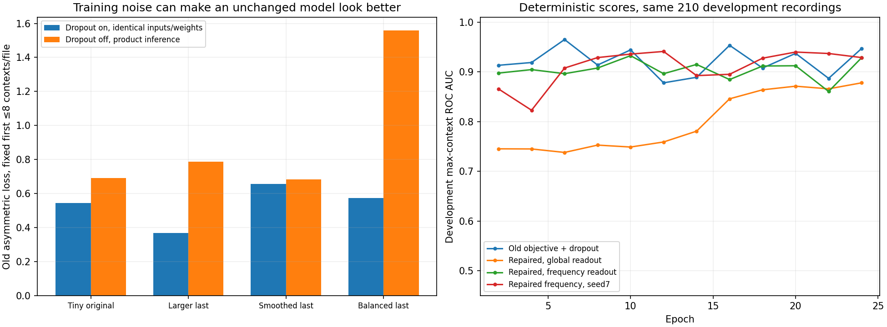
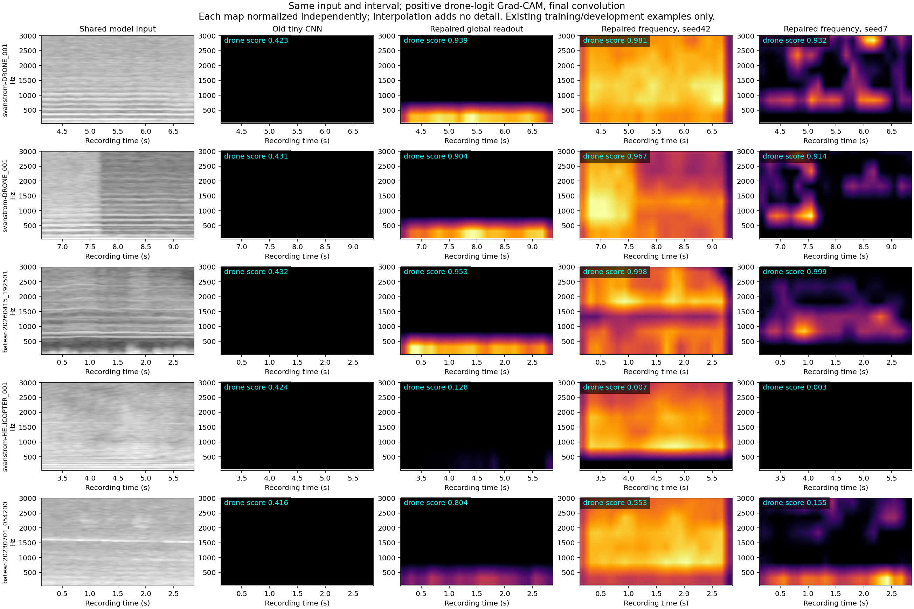
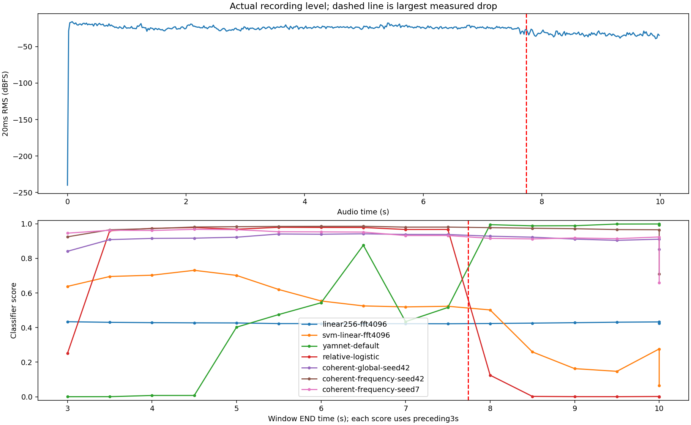
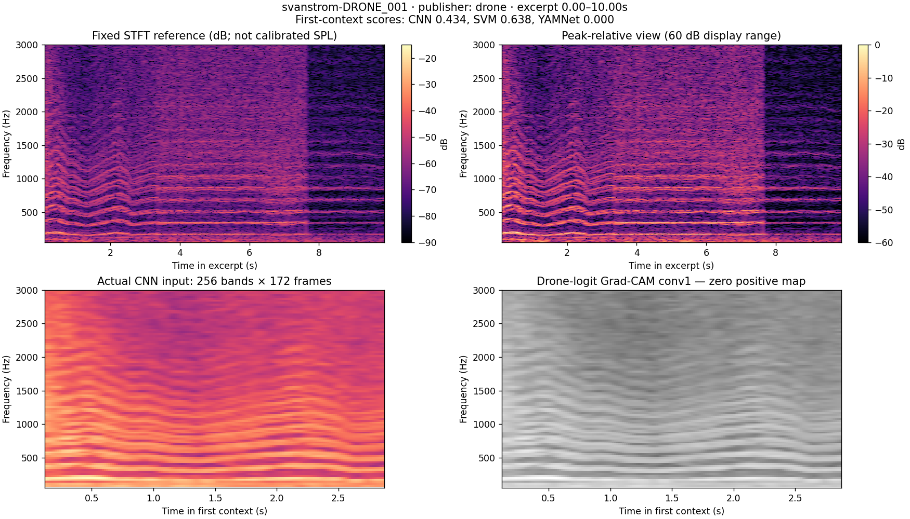
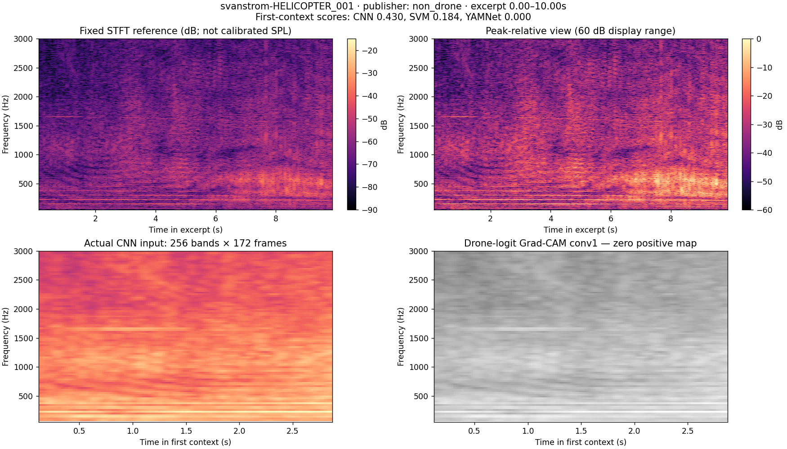
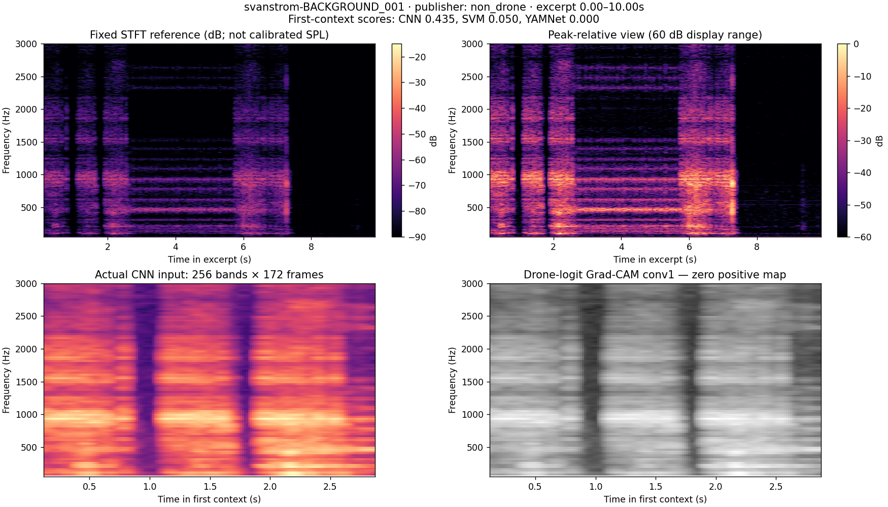
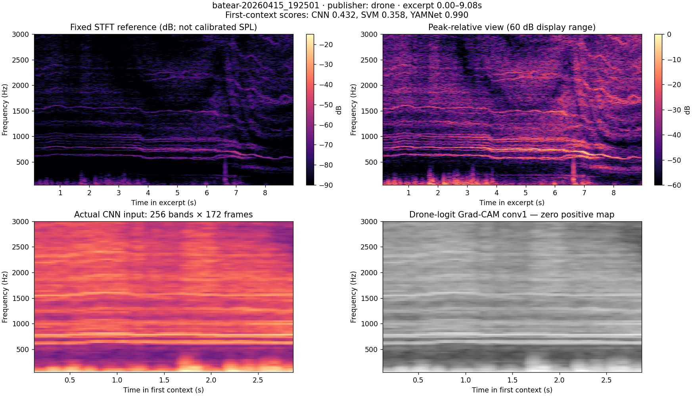
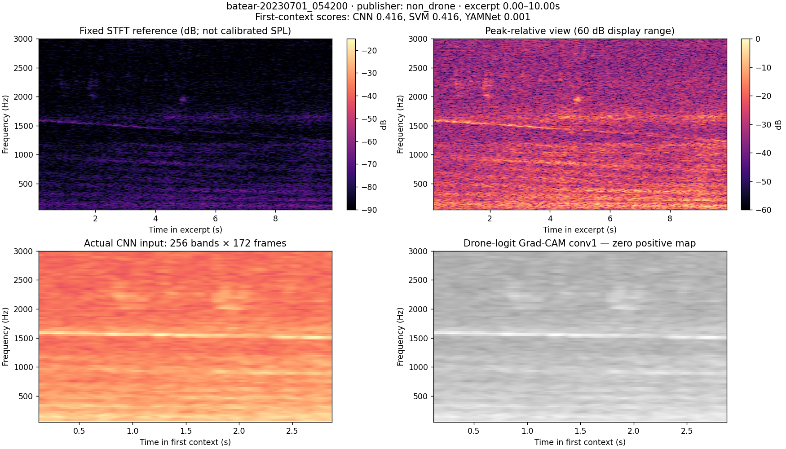
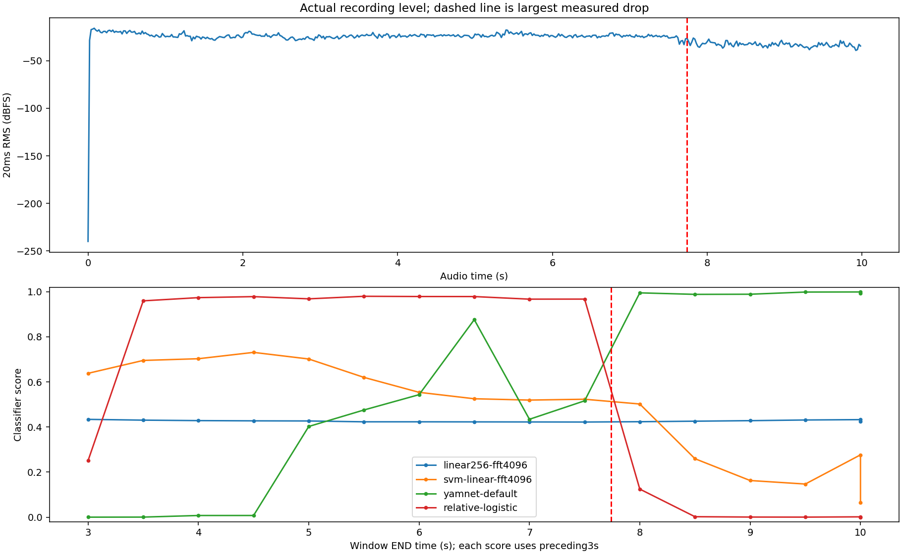

← Open the model lab and playable examples
CNN training repairs · Quieter-transition experiment · Competing explanations and next steps
The old positive-max / negative-mean objective rewards input-independent dropout noise. This is a demonstrated defect in this project’s scratch-CNN implementation. It is not a diagnosis of every historical EfficientNet result or proof that this is the only remaining problem.
Give both classes exactly the same constant input. A dropout 0.1 feature can produce logit −1 when retained and +1.5 when dropped. A positive bag of 8 gets eight chances to receive the high logit, while the negative loss averages those spikes. Expected balanced loss is 0.566, better than the uninformative 0.693, despite no acoustic/class information. With 60 contexts it falls to 0.328. Turning dropout off yields 0.762. Applying the same maximum-score BCE to both classes removes this counterexample: identical class distributions cannot beat 0.693.
This is not just a toy image observation. On 405 fixed real training bags, the frozen balanced model’s old loss is 0.367±0.017 across 20 dropout draws but 0.788 at inference, without changing its inputs or weights. The larger unbalanced model’s last checkpoint is 0.574±0.081 versus 1.559. The exact witness and checkpoint audit is separate from accuracy evidence. These fixed-checkpoint comparisons establish mode sensitivity, not sole attribution of the learned optimization trajectory.
Data is unchanged: 405 real training recordings, 55 publisher-positive and 350 negative, 1.912 hours in total. Those positives cover only 6 conservative provenance groups. The same 210 development files contain 22 positives and 188 negatives, 1.908 hours and 4 positive groups. The final assessment audio was not opened. Publisher recording/flight presence is weak supervision; individual windows have not acquired verified audible labels.
All new arms consume exactly the same cached input: mono 16 kHz, 3 seconds, 4096-sample Hann STFT, 256-sample hop, 256 uniform-Hz triangular bands from 50–7600 Hz, relative power with a per-context peak reference, log intensity with an 80 dB floor. Tensor [256,172,1]. There is no shared waveform RMS normalization. Fresh extraction matched all 7,299 train/development cached tensors exactly; 4,648 are training contexts. Reusing them does not add independent data.
Coverage control changes frequency strides from 2/4/4 to 2/3/3, preserving 1,781 parameters and identical initial weights. Every input row now has a computation path. The wider encoder uses 32/64/128 filters with 5×5,3×3,3×3 kernels, ReLU and frequency/time strides(2,2),(3,2),(3,2). It has 93,313 parameters with a linear global-average head.
The matched readout pair shares that encoder and its exact initial convolution weights. Global readout averages frequency/time then applies Dense 473-ReLU→logit: 154,675 parameters. Frequency readout averages time, retains 15 frequency positions, flattens 1920 features then Dense 32-ReLU→logit: 154,689 parameters. They differ by 14 parameters, with different readout function classes. This is one spectrogram input; no 3D or multi-view input was added.
The repaired pair uses binary cross entropy of the SAME maximum context logit for either recording class and disables dropout. Both repairs are bundled; the before/after training comparison does not isolate their separate effects. Per-step sampling is the same cyclic up-to 8 contexts for either class. Each batch has 4 recordings per class, no additional class weights, 51 steps per epoch, 24 epochs, Adam 0.001/clipnorm 1 and convolution L2=1e-4. Validation is deterministic over all cached contexts every 2 epochs; select minimum consistent-max balanced development BCE. Best-at 8, selected-best and last checkpoints are all retained. Fixed seeds reproduce initialization; seed 7 is an explicitly interim development-triggered replication, not a second test set.
All 210 development recordings are replayed densely with the same 3 second/.5 second causal contexts, including disclosed tails/silence. Thresholds and 1/2-hit confirmation are selected under the shared 5% negative-recording budget: at most 9/188 alarms. Matching FP counts are calibration constraints, not independent false-alarm measurements. These recordings have been used repeatedly for development; no fresh assessment is claimed.
| Model | Parameters | Selected epoch | TP /22 | FP /188 | Max-score AUC |
|---|---|---|---|---|---|
| compact8 | 1,781 | 2 | 11 | 9 | 0.835 |
| coverage8 | 1,781 | 2 | 4 | 9 | 0.826 |
| medium-sampled-max | 93,313 | 12 | 13 | 9 | 0.866 |
| medium-full-smooth | 93,313 | 22 | 12 | 9 | 0.799 |
| medium-balanced-max | 93,313 | 18 | 8 | 9 | 0.775 |
| medium-full-max | 93,313 | 14 | 11 | 9 | 0.858 |
| medium-balanced-global-head | 154,675 | 4 | 12 | 9 | 0.849 |
| medium-balanced-frequency-head | 154,689 | 24 | 18 | 9 | 0.956 |
| coherent-global-seed42 | 154,675 | 24 | 11 | 9 | 0.893 |
| coherent-frequency-seed42 | 154,689 | 10 | 16 | 9 | 0.941 |
| coherent-frequency-seed7 | 154,689 | 12 | 17 | 9 | 0.949 |
This table uses all cached train/development contexts at the declared 8-epoch snapshot and 24-epoch horizon, evaluated without dropout. It is a different context sampling from dense product replay. The last checkpoint is reported even if worse than the development-selected checkpoint.
| Model | Best-at8 selected epoch / dev AUC | Best-at24 selected epoch / dev AUC | Last24 train AUC | Last24 dev AUC |
|---|---|---|---|---|
| medium-sampled-max | 2 / 0.735 | 12 / 0.864 | 0.428 | 0.559 |
| medium-full-smooth | 8 / 0.801 | 22 / 0.796 | 0.745 | 0.753 |
| medium-balanced-max | 2 / 0.741 | 18 / 0.765 | 0.726 | 0.843 |
| medium-full-max | 6 / 0.844 | 14 / 0.843 | 0.677 | 0.854 |
| medium-balanced-global-head | 4 / 0.846 | 4 / 0.846 | 0.600 | 0.840 |
| medium-balanced-frequency-head | 6 / 0.965 | 24 / 0.947 | 0.955 | 0.947 |
| coherent-global-seed42 | 2 / 0.745 | 24 / 0.878 | 0.910 | 0.878 |
| coherent-frequency-seed42 | 8 / 0.908 | 10 / 0.933 | 0.985 | 0.928 |
| coherent-frequency-seed7 | 8 / 0.929 | 12 / 0.941 | 0.991 | 0.929 |
Preserved controls on the same development files: original linear 256 CNN 12/22, non-neural SVM 15/22, relative-logistic 18/22, YAMNet+logistic 20/22; all 9/188 negative files alarmed. The new compact 8 repeat reaches 11/22; it is a separately identified training run, not a bitwise recreation of the preserved original 12/22 checkpoint. These are correlated recording counts, not independent flight trials.
| Model / source | Positive files detected | Negative files alarmed |
|---|---|---|
| medium-balanced-frequency-head / batear-field | 7/11 | 2/6 |
| medium-balanced-frequency-head / d3set-ground | 11/11 | 0/0 |
| medium-balanced-frequency-head / d3set-noise | 0/0 | 2/22 |
| medium-balanced-frequency-head / esc10 | 0/0 | 5/160 |
| coherent-global-seed42 / batear-field | 5/11 | 3/6 |
| coherent-global-seed42 / d3set-ground | 6/11 | 0/0 |
| coherent-global-seed42 / d3set-noise | 0/0 | 0/22 |
| coherent-global-seed42 / esc10 | 0/0 | 6/160 |
| coherent-frequency-seed42 / batear-field | 6/11 | 2/6 |
| coherent-frequency-seed42 / d3set-ground | 10/11 | 0/0 |
| coherent-frequency-seed42 / d3set-noise | 0/0 | 2/22 |
| coherent-frequency-seed42 / esc10 | 0/0 | 5/160 |
| coherent-frequency-seed7 / batear-field | 6/11 | 1/6 |
| coherent-frequency-seed7 / d3set-ground | 11/11 | 0/0 |
| coherent-frequency-seed7 / d3set-noise | 0/0 | 1/22 |
| coherent-frequency-seed7 / esc10 | 0/0 | 7/160 |
The same Svanstrom DRONE_001 waveform from 4–7 seconds was uniformly attenuated or attenuated only in its second half, with a 10ms taper. These are controlled diagnostic changes to one existing training recording, not extra training audio or independent accuracy trials. Compare each model to itself; scores are not calibrated probabilities.
| Model | Original score | Uniform×0.25 | Second-half×0.25 |
|---|---|---|---|
| coherent-frequency-seed42 | 0.9808 | 0.9808 | 0.9753 |
| coherent-frequency-seed7 | 0.9320 | 0.9320 | 0.9316 |
| coherent-global-seed42 | 0.9385 | 0.9385 | 0.9023 |
| linear256-fft4096 | 0.4225 | 0.4225 | 0.4295 |
| relative-logistic | 0.9671 | 0.9671 | 0.0469 |
| svm-linear-fft4096 | 0.5195 | 0.5195 | 0.4023 |
| yamnet-default | 0.4344 | 0.0101 | 0.0161 |
The new frequency models remain stable on this particular internal-step control, while YAMNet and relative-logistic change sharply. This is one useful case, not evidence of general gain robustness. The real transition also changes frequency bands unequally, so it is not solely a uniform volume change.
The five-context comparison includes the Svanstrom recording before/across the drop, a Batear FPV recording, helicopter and rural background. The two frequency models separate these particular examples more strongly than the tiny CNN, whose scores remain near 0.42. Seed 7 often concentrates around the 800 Hz region in the drone examples, while seed 42 has much broader maps. Seed 42 also shows a bright normalized positive map for the helicopter despite a drone score near 0.007: positive-only, independently normalized Grad-CAM is not the model score. Spatial gradient averaging can obscure a frequency-sensitive head. These plots do not establish that harmonic relationships were learned or that highlighted regions are causal. Audible event timing remains unverified.
## What this does and does not establish
The repaired frequency readout detects 16/22 positives at seed 42 and 17/22 at seed 7, versus 11/22 for its matched repaired global readout. Under the older loss, the frequency/global pair reaches 18/22 versus 12/22. Preserving frequency positions helps in both comparisons. The objective repair does NOT improve this operating point over the older frequency model: its value is removing a proven training loophole, not a demonstrated standalone alarm-accuracy gain. Both new seeds improve ranking over the tiny baseline, but two seeds cannot characterize run-to-run uncertainty.
The objective defect is concrete; correcting missing frequency paths alone was insufficient. Capacity, readout structure, weak target quality and collection shortcuts remain distinct questions. A source-only rule already predicts 199/210 development labels. Better CNN scores here can still reflect acquisition conditions or other cues. Grad-CAM is a sensitivity diagnostic, not an audible-label or causality check.
The next decisive data task is matched, independently reviewed audible-on/off intervals with entire capture sessions held out, followed by a fresh grouped assessment. Increasing crop counts or repeatedly tuning this development set cannot supply that evidence. The old YAMNet product default and its consumed assessment remain separately identified. The browser lab now offers the new controls beside it, with identical-context Grad-CAM, training histories, retained multi-recording results and original audio playback levels.
Plans, training histories, selected/last weights, exact execution source snapshots, instance-selection audits, per-recording source outcomes and compressed full score traces are retained. Raw traces identify trained parents and use placeholder 0.5 decisions; evaluation reports reapply each frozen calibrated decision. No raw audio or feature cache is copied into the artifact package.
scripts/experiment_cnn_foundations.py, scripts/experiment_balanced_cnn.py, scripts/experiment_cnn_followup.py and scripts/experiment_coherent_cnn.py execute the declared controls. scripts/evaluate_cnn_foundations.py shares dense development frontends and verifies batch/sequential score parity before calibration. scripts/package_cnn_foundations.py creates this report and the portable catalog.

Exact objective counterexample and real-input checkpoint measurements
Same input and interval in each row. Final-convolution positive drone-logit Grad-CAM is normalized within each map; map brightness is not comparable between models. These are selected training/development examples, not additional independent trials or verified audible labels.

These controls alter the same real waveform, not its label. The internal step attenuates only the second half of the context; it changes temporal energy distribution. Uniform attenuation preserves the relative spectral input.
| Model | Original4–7s score | Uniform×0.25 score | Internal half-context×0.25 score |
|---|---|---|---|
| coherent-frequency-seed42 | 0.9808 | 0.9808 | 0.9753 |
| coherent-frequency-seed7 | 0.9320 | 0.9320 | 0.9316 |
| coherent-global-seed42 | 0.9385 | 0.9385 | 0.9023 |
| linear256-fft4096 | 0.4225 | 0.4225 | 0.4295 |
| relative-logistic | 0.9671 | 0.9671 | 0.0469 |
| svm-linear-fft4096 | 0.5195 | 0.5195 | 0.4023 |
| yamnet-default | 0.4344 | 0.0101 | 0.0161 |

Download measurements, counterfactual controls and original timelines
Seven excerpts were selected by identifiers and source, before inspecting their spectra or choosing successful predictions. All come from existing training/development recordings. The plots are actual audio STFTs. This is a qualitative visual review, not a listening-verified annotation or an accuracy estimate. The five redistributable examples are playable in the Cloudflare interface; local copies of all seven excerpts are under runs/real-observations-v1/.
The top panels of each detailed figure show the same high-resolution STFT with a common numerical power reference and with a per-excerpt relative reference. The lower panels show the first three-second CNN input and genuine drone-logit Grad-CAM at conv1. Display scaling is not a claim about calibrated sound pressure. The three numbers in each title are first-context classifier scores, not independently calibrated probabilities or recording-level decisions.
| Specific case | Visible observations | Distinction the formulation needs |
|---|---|---|
| [Svanstrom DRONE_001](svanstrom-DRONE_001.png), first 10 s | Many narrow, approximately parallel bands bend together during the first 3 s, then settle. There is an abrupt broadband level change near 7.7 s. The first-context CNN score is .434, SVM .638, YAMNet .00035. | Relative positions and coordinated trajectories are more descriptive than isolated bright pixels. A visible harmonic stack does not guarantee this trained head recognizes it. The abrupt transition needs provenance/listening review before being called flight behavior. |
| [Svanstrom HELICOPTER_001](svanstrom-HELICOPTER_001.png), first 10 s | Narrow low-frequency bands coexist with a broad, changing concentration around several hundred Hz. | A non-drone rotorcraft also supplies tonal and time-varying structure. “Mechanical harmonics” alone cannot define the target class. |
| [Svanstrom BACKGROUND_001](svanstrom-BACKGROUND_001.png), first 10 s | Strong sustained bands near 1 kHz and at lower frequencies, several abrupt vertical transitions, and a quieter tail. | Background is not synonymous with broadband noise. A detector can exploit recording transitions instead of drone acoustics. These transitions are observations, not proof of editing or mislabelling. |
| [Batear 20260415_192501](batear-20260415_192501.png), 9.08 s | Several closely spaced ridges around 600–900 Hz move together; broadband energy and a vertical transient also vary. The first-context scores are CNN .432, SVM .358, YAMNet .990. | Multiple nearby components and coherent motion may matter. This differs substantially from the Svanstrom comb. A useful formulation must accommodate both without treating every ridge as a drone. |
| [Batear 20230701_054200](batear-20230701_054200.png), first 10 s | A narrow band around 1.5 kHz drifts while low-frequency background varies. | A moving tonal ridge can occur in a publisher-negative recording. This background and the April 2026 positives are different years, not a matched drone-on/drone-off experiment. |
| [D3 ground 1679740f637ee146](d3-1679740f637ee146.png), 98–108 s | Broad low-frequency energy, a low narrow component and faint higher structure; the obvious multi-line comb from DRONE_001 is absent. The first-context YAMNet head still scores .989. | A flight-presence label does not specify audible rotor evidence in this excerpt. Distance, masking, microphone response and a weak label remain competing explanations; this image cannot choose among them. |
| [D3 Insect 138c873838376b30](d3-138c873838376b30.png), first 10 s | Broad, changing concentrations and structured high-frequency sweeps. | Temporal structure and frequency motion are not exclusive to rotors. The negative class needs such structured confounders. |
A plausible listening hypothesis is a sustained mechanical buzz/whine with multiple tonal components, beating or roughness, changes shared by several components as rotors change speed, and a coherent rise/fall relative to the background. Rotor blade-passing frequency is approximately blade count × rotations per second; multiple rotors can create nearby families rather than one perfectly regular comb. Doppler and changing load can also move frequencies. These are physical hypotheses to check against listening notes, not criteria established by the seven plots. Helicopters, fans, engines and insects can share parts of the description; no specific fan example was inspected here.
| Quality | Current pipeline | Consequence |
|---|---|---|
| Narrow tonal peaks and spacing | Linear-frequency STFT preserves detail; mel or uniform triangular bands average it. Log intensity compresses amplitude without warping frequency. | A basic STFT contains visibly useful structure in several examples. The log operation itself is not the same as mel frequency averaging. |
| Relationships between separated harmonics | The compact CNN sees only 25 frequency bins before global averaging. At the full 4096 FFT this is about 98 Hz. | An artificial input control reproduced identical scores for different global band arrangements. Finer input does not guarantee a network can compare distant bands. The 256-band CNN has a different physical receptive field; this test is not a proof that all variants erase the same patterns. |
| Coordinated motion over time | Three seconds are retained, but the compact final receptive field is 17 frames (about 0.256 s between first/last frame centers, plus the analysis-window support), followed by global averaging. | The network can react to local motion but cannot generally assemble an arbitrary whole-context trajectory from these local averages. |
| Rapid pulsing/beating | A 256 ms Hann window and 16 ms frame step trade temporal detail for narrow spectral bins. Modulation may remain as spectral sidebands. | A high-resolution magnitude plot is not automatically a good description of rapid envelope modulation. This motivates measurement on examples before adding another input view. |
| Emergence relative to the background | Peak-relative normalization removes a common absolute amplitude factor; within-context spectral contrasts remain. There is no independently measured background or SNR label. | Making every window look bright does not make its rotor component audible. RMS normalization does not remove wind or raise SNR. |
| Source direction | Ingress averages ordinary stereo recordings; D3 array data were separately reduced to one physical microphone channel. | Spatial distinctions are absent from these models. Whether they would help requires suitable recordings, not a larger image. |
| Audible presence and its boundaries | Publisher recording/flight labels, no independently verified audible intervals. Positive training uses a maximum over up to eight sampled windows. | The target can be coarser than the evidence. A selected sub-bag can miss an audible event; the positive gradient can reinforce a coincidental high-scoring window. This is a failure mechanism to investigate, not a demonstrated wrong label for a particular excerpt. |
The next simplified task should be audible drone-on versus drone-off within the same recording setup, with uncertain intervals retained as uncertain and with confounding rotor/tonal sounds. First verify those specific distinctions, then test whether the chosen features and model preserve them, then expand to new sources. The interface exports draft interval notes to support that loop; it does not silently convert them to ground truth or train on them. No multi-view/context branch has been added.
Exact source identifiers, excerpt offsets, file hashes, weak-label status, spectral peak measurements, scores and licenses are in cases.json. Selection and figure generation are reproducible with scripts/observe_real_audio.py using matplotlib 3.10.8.
CC0-1.0 · Original source

CC0-1.0 · Original source

CC0-1.0 · Original source

MIT · Original source

MIT · Original source

These controls precede another architecture search. The assessed YAMNet default and all frozen comparison weights/decisions remain the same. No new final assessment was opened. See the separate seven real case studies for observations that constrain the next formulation.
Three arms ran together with the same 405 train/210 development recordings, compact CNN, seed42, Adam.001, clipnorm1, dropout.1, L2.0001, sampled-bag objective, eight epochs and minimum balanced development bag-loss checkpoint. The baseline reused the verified original cache; the two fixed-reference arms built new caches with the same sampled starts. Plans were written before the runs. No alarm threshold was optimized or model promoted.
| Input amplitude rule | Selected epoch | Train balanced bag loss | Development balanced bag loss | Development max-sampled-context ROC AUC |
|---|---|---|---|---|
| Context spectral peak (repeat) | 2 | .6889 | .6765 | .8066 |
| Fixed STFT power reference, raw waveform | 8 | .6600 | .5706 | .8283 |
| Fixed STFT power reference, reference-RMS waveform | 4 | .6477 | .5591 | .8095 |
The fixed-reference variants change optimization and improve this development bag-loss measure. Adding RMS to the fixed-reference arm does not improve its ranking in this run. This does not establish a solution to the CNN failure, a universal advantage for RMS normalization, or field reliability. Labels remain weak, there are very few positive provenance groups, and only one seed was tested. The comparison uses the capped cached contexts, not full-recording event recall or false alarms/hour.
The baseline repeat is not bit-identical to the historical run despite the same seed/recipe: maximum retained parameter difference .00840; historical selected development loss .67565 versus .67653 now. CPU/environment numerical behavior and discontinuous hard-max instance selection are plausible contributors, not isolated causes. The three new arms ran in the same process. Old frozen artifacts were preserved.
A later frequency coverage check found a separate structural issue: frequency stride4 with kernel3 skips 57/256 input rows in the selected CNN and 420/1933 in the full-resolution CNN. An all-positive linear dependency probe establishes missing computational paths independently of learned weights/ReLUs; replacing every pixel in those rows of a real spectrogram changes the trained scores by exactly0. The extra late convolution does not recover the skipped inputs. This measures missing tensor paths, not a percentage of physical sound information or the field-error contribution. See competing explanations and proposed controls and the quieter-transition diagnostic.
The checks exclude a cache mismatch and inability to optimize any real examples. They establish an amplitude-rule cancellation, a concrete compact-architecture invariance, and serious collection/label confounding. They do not identify one sufficient root cause for the real-world failures.
The current formulation asks a randomly sampled positive recording sub-bag to contain evidence even though audibility was never annotated. Its max-positive loss routes a positive gradient through only one selected window. The full task also asks a small local network to generalize across microphones, backgrounds and very different positive recording structures after a short training run. The small memorization control removes several of those difficulties at once; its success cannot isolate which one breaks generalization.
The next useful simplification is same-setup audible-on/off examples with temporal labels and uncertain intervals, followed by explicit harmonic/trajectory/tonal-confounder checks. Work from those examples toward broader source generalization. A pretrained CNN such as YAMNet or EfficientNet may help, but improvement alone does not explain the mechanism.
Evidence: input audit, architecture control, memorization control, normalization plan, per-record comparison. Scripts are diagnose_cnn.py, diagnose_normalization.py and summarize_cnn_diagnosis.py. New normalization bundles remain trained diagnostics under ignored runs/cnn-diagnosis-v1/normalization-models/; none has frozen alarm thresholds or appears in the interface catalog. Byte-identical copies and a checksummed source snapshot are preserved in the diagnostic packet.
The user's screenshot pattern matches Svanstrom DRONE_001: near a window ending5s the CNN score is.4269, YAMNet-based score about.4024, SVM.7017 and relative-logistic.9685; at a window ending9.5s they are.4312,.9986,.1472 and.0005. Small browser/export differences account for the last displayed decimals. This is one existing training recording, not a new detection trial. The user supplied the listening observation; the analysis here measures the waveform and controlled changes, without claiming independent listening verification.
The largest measured median20ms-RMS drop occurs near 7.74s, about 5.65dB across adjacent240ms intervals. Equal two-second excerpts immediately before/after have RMS.06334 and.02473. Their spectral balance also changes: mean band powers fall by approximately3.9dB below100Hz,10.8dB at100–500Hz,9.8dB at500–1500Hz,13.8dB at1500–4000Hz and15.2dB at4000–8000Hz. The actual pre/post comparison is therefore not a controlled uniform gain change; it can include changed background or source components. These measurements are not an independently estimated acoustic SNR.
All gain controls use the exact same three-second waveform from4–7s. Uniform attenuation adds no noise and does not clip. The internal-step control attenuates the second half by a factor.25 with a10ms taper to avoid adding a click. The names “minus12dB” denote factor.25, actually minus12.041dB. The factor.1 control is minus20dB. No altered waveform is used for training or field-accuracy evidence.
| Detector | Original segment | Uniform ×.25 | Uniform ×.1 | Second half ×.25 |
|---|---|---|---|---|
| linear256 CNN | .4225 | .4225 | .4225 | .4295 |
| RBF SVM | .5195 | .5195 | .5195 | .4023 |
| YAMNet encoder + project logistic head | .4344 | .0101 | .0000071 | .0161 |
| Relative-logistic | .9671 | .9671 | .9671 | .0469 |
The YAMNet-based detector has a demonstrated sensitivity to uniform digital gain on this segment. This test concerns the entire encoder-plus-trained-head pipeline and does not isolate a defective layer or prove a wrong acoustic label. The relative baselines cancel a constant gain over a whole window, yet retain changes within it. The large relative-logistic jump can therefore occur without changing the underlying frequency components: its temporal log-mel statistics change. The small CNN's nearly flat response is not evidence of correct gain robustness or useful recognition; its training fit and structural limitations are separately documented.
An extra control applies the same available-context RMS target.05, gain ceiling20dB and peak ceiling.98 before the unchanged detector. For the YAMNet-based detector, both the original and uniformly attenuated signals then score .1731, while the internal-step signal scores .0136. This confirms that a common RMS reference removes uniform-gain sensitivity for this non-capped pair without changing the classifier weights. It does not establish that this preprocessing improves field detection, and a single scalar gain does not remove the internal level step. These controls are not changes to deployed inference.
Each point is timestamped at the end of its three-second context. Windows spanning the7.74s transition contain both loud and quiet audio. A score at9.5s summarizes6.5–9.5s, not the instantaneous sound at9.5s. The original44.1kHz WAV resamples to160,001 samples and can also produce a disclosed padded final context; comparisons should distinguish that tail from full contexts. The screenshot values above match a full context ending9.5s, so end padding is not the explanation for those particular displayed values.
These controls establish two different sensitivities: overall digital gain in the YAMNet-based pipeline, and within-window level dynamics in a scale-relative baseline. They do not show that every observed change in the real clip is caused only by gain, that louder always means more drone-like, or that a normalization change is a validated fix.
Exact source hash, all eleven models, every original trace, controls, gain-matched real excerpts and measurement definitions are in diagnosis.json. Reproduce with scripts/diagnose_level_transition.py using the existing corpus and frozen models.

Download exact level-transition measurements and all model scores
The initial CNNs were unusually small:1,781 parameters, or3,077 for the additional frequency convolution. They were sanity controls, not an adequate basis for concluding that CNNs are worse than the YAMNet-based detector. The subsequent foundations experiments test93,313-parameter encoders and parameter-matched154,675/154,689-parameter global/frequency readouts. YAMNet has millions of pretrained encoder parameters even though our fitted logistic head has only1,025. Parameter count, pretraining and training procedure are separate factors.
Fitting16 examples proves only that some real inputs can be fitted. At the selected repeat checkpoint, full sampled-training balanced bag loss is.6889, close to a constant50/50 classifier's.6931. Full-dataset optimization, capacity and target quality remain unresolved; this is not established as a purely generalization problem.
| Explanation | Current evidence or reason to consider it | Test that would discriminate it |
|---|---|---|
| Objective rewards dropout noise | Positive-max/negative-mean loss can beat an uninformative baseline on identical inputs for both classes. A fixed-weight real-input audit also shows much lower old loss with dropout than at inference. This is a verified flaw in our scratch-CNN pipeline, not a claim about the historical EfficientNet trainer. | The new paired controls use the same maximum-score BCE for both classes and disable dropout. Their before/after improvement cannot separate those two bundled repairs. The mathematical counterexample and fixed-checkpoint mode audit isolate the loophole itself. |
| Structural frequency coverage gaps | Frequency strides4 with kernels3 skip entire tensor rows. An all-path dependency check found57/256 rows unreachable in the selected CNN and420/1933 in the full-resolution CNN. Changing them left real-context scores exactly unchanged. The extra late convolution cannot restore earlier missing paths. | Correct coverage in a new architecture and verify every input bin has a path. Keep the data/frontend/objective fixed when comparing its behavior. This verifies a structural repair; field improvement still needs measurement. |
| Insufficient feature capacity | Six, eight and sixteen filters are a severe bottleneck for varied recordings. The16-context fit does not show adequate capacity for the full task. | After coverage and supervision checks, hold the corrected layout fixed and vary channel width over a small prespecified range. Compare consistent inference-mode train/held-out loss and error cases. Distinguish inability to fit training from failure across sources. |
| Wrong temporal target or label noise | Publisher-positive files can contain inaudible or absent intervals; some apparent negatives may be ambiguous. Flight presence, audible rotor evidence and a useful alarm are different targets. | Independently review specific intervals, including negatives, with uncertainty retained. Build a simple audible-on/off task using the same recording setup and hold out entire recordings/flights. Do not split overlapping windows across train/test. |
| Hard-max instance selection reinforces the wrong windows | Each positive step samples at most8 windows and routes the classification gradient through the largest logit. An early unrelated sound can win repeatedly. A positive file does not guarantee every sampled sub-bag contains audible drone. | On a verified subset, compare ordinary window-supervised training with the bag procedure. Log which positive windows win and check their audible evidence. An oracle selection of known-audible windows can isolate the selection problem without changing CNN capacity. |
| Too little effective positive learning | With55 positive files, there are55 positive winner selections per epoch, excluding ties. A checkpoint at epoch2 reflects about110 such selections, despite thousands of forwarded windows. The 16-context memorization test instead used750 full-batch updates. | Measure direct positive-gradient exposure, convergence and consistent full-training loss. Train the verified simplified task to fit before interpreting a validation gap. Repeated seeds check stability; more epochs alone cannot correct invalid targets. |
| Acquisition shortcuts and limited independent coverage | A source-category-only rule predicts199/210 development labels. Positive training covers only a few conservative source/day groups. Long recordings and overlapping windows do not create independent environments. | Matched drone-on/off backgrounds, entire-session holdouts, then held-out days/microphones/sites. Examine source prediction and source-stratified detection. More independently captured conditions are more useful than more crops of the same source. |
| Loss optimizes typical negatives while alarms depend on rare peaks | Negative loss averages window losses; any sufficiently sustained high-scoring window can trigger an alarm. Validation caps60 windows while product analysis scans dense contexts. | Inspect the highest-scoring verified-negative contexts and compare consistent recording/alarm measures at matched durations. Only then test a loss that explicitly penalizes negative tails or the alarm activation statistic. |
| Gain and temporal-envelope sensitivity | The current YAMNet-based detector changes greatly under uniform attenuation. Even a scale-relative baseline can react strongly to a gain drop inside a window. | Same-waveform uniform-gain and piecewise-gain controls, with no clipping or added noise; compare original and matched-RMS actual excerpts. The existing level-transition diagnostic does this without retraining. |
| Shared preprocessing mistake | Exact cache parity proves consistent execution, not acoustically correct execution. Channel averaging can cancel components; rate/header errors, clipping, recording AGC, compression, bandwidth reduction and thresholds can remove evidence. | Compare original channels and full-band audio with the canonical waveform stage by stage. Check spectra, channel coherence and amplitude units, and verify behavior on known signal controls. Avoid confusing waveform RMS, spectral-peak scaling and training-statistic standardization. |
| Recording/cut/padding artifacts | Specific examples contain abrupt transitions, and one padded final context may be emitted. Max selection can favor a transition or quiet tail over rotor evidence. | Align every high score to exact available samples, padding and edits. Compare matched-duration inputs and inspect selected positive windows. A padding effect is distinct from sensitivity to a real level change. |
| Decision/calibration effects | The initial threshold grid produced zero CNN detections despite useful ranking. New thresholds produced nonzero recall. The identical9/188 development FP counts arise largely from the chosen5% budget. | Separate score ranking, selected operating point, detection confirmation and actual field error. Report which files fail, source and duration. Use fresh grouped recordings to assess generalization; the repeatedly used development set cannot supply that evidence. |
| Pretraining helps optimization or supplies useful priors | Current YAMNet versus tiny scratch-CNN comparisons change capacity, frontend, initialization and training objective together. Pretraining may also improve initial instance selection under weak labels. | Compare pretrained and random initialization of the same backbone with the same verified inputs and converged training. Then reintroduce bag labels. Improvement alone does not identify which mechanism helped. |
| The requested distinction is sometimes unobservable | A far/masked drone or a stationary tonal machine may not be distinguishable from a short mono recording. More parameters cannot recover absent evidence. | Define an audible operating envelope and independently labelled uncertain cases. Test clear cases before weak/ambiguous ones. Do not treat every physical drone presence as an acoustically solvable positive. |
Whole-file original, decoded and gain-normalized hash checks found no opposite-label duplicate groups among the615 train/development records. This does not rule out overlapping excerpts, wrong publisher labels or acoustic ambiguity.
Coverage, capacity and a demonstrated loss defect now have controlled follow-ups. The next decisive task is a manageable, independently reviewed dataset with audible positives and matched/structured negatives. Use ordinary supervised training and verify full-training fit, with entire sessions held out. Compare that with weak bag labels while holding examples and architecture fixed. Then expand held-out days and microphones and compare matched pretraining controls. This separates supervision/optimization, within-source discrimination and cross-source failure without counting more crops as new environments.
Harmonic relationships, coherent trajectories and modulation remain candidate descriptions to measure against specific positive and negative examples. Coverage, capacity, batch composition, weak-instance pooling and readout controls have now been trained and are reported in the foundations account. The input representation is held fixed. The 3D/multi-view idea remains parked.
Evidence: frequency coverage, prior controlled diagnosis, level-transition experiment, and specific recordings.